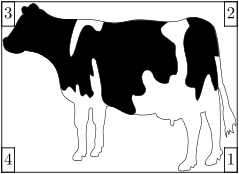
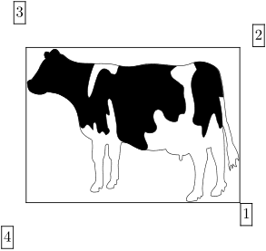
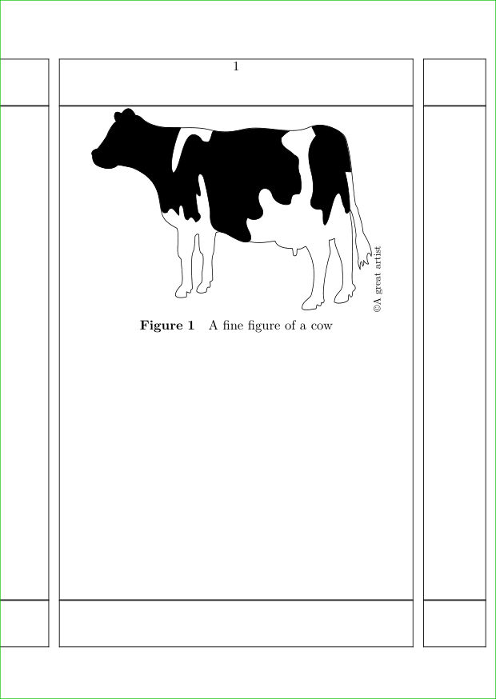

Collectors are an alternative to Overlays that can be used to build-up composite objects; they are like Layers, but not for whole pages but only for single objects (e.g. images).
See the details manual for further explanations.
Example
Adding labels to a figure.
-
\setupexternalfigures [location={local,default}] \definecollector[example] \setcollector [example] {\externalfigure[cow] [width=4cm,frame=on]} \setcollector [example] [corner={right,bottom}, location={left,top}] {\framed{1}} \setcollector [example] [corner={right,top}, location={left,bottom}] {\framed{2}} \setcollector [example] [corner={left,top}, location={right,bottom}] {\framed{3}} \setcollector [example] [corner={left,bottom}, location={right,top}] {\framed{4}} \composedcollector{example}
- 
There is no confusion if the added text is placed within the first object. However,
-
\setupexternalfigures [location={local,default}] \definecollector[example2] \setcollector [example2] {\externalfigure[cow] [width=4cm,frame=on]} \setcollector [example2] [corner={right,bottom}, location={right,bottom}] {\framed{1}} \setcollector [example2] [corner={right,top}, location={right,top}] {\framed{2}} \setcollector [example2] [corner={left,top}, location={left,top}] {\framed{3}} \setcollector [example2] [corner={left,bottom}, location={left,bottom}] {\framed{4}} \composedcollector{example2}
- 
Notice that the size of the collected object grows as text is added. As a consequence, the positions of the corners get redefined as the bounding box grows.
Example - copyright labels on images
Some journals credit the name of the artist / photographer / copyright owner of an image by printing the text running up the side of the image. I wanted to do this so that the figure caption could be used purely to describe the image.
In this example the cow is drawn with the figure caption below as normal and with the copyright text running upwards along the edge of the right-hand edge of the image. And if you want to fine tune the space between the image and the text then it's easy to \framed the text and play around with the size and offsets.
-
\showframe \setuppapersize[A6] \definecollector[example] \starttext \setcollector [example] {\externalfigure[cow] [width=0.8\textwidth,frame=off]} \setcollector [example] [corner={right,bottom}, location={right,top}] {\rotate[rotation=90] {\tfx \copyright A great artist}} \placefigure [ ] [fig:cow] {A fine figure of a cow} {\composedcollector{example}} \stoptext
- 
| TODO: We need more documentation and examples for this complicated subject. (See: To-Do List) |